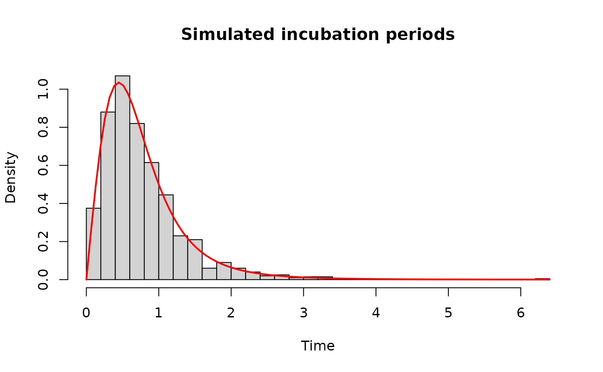
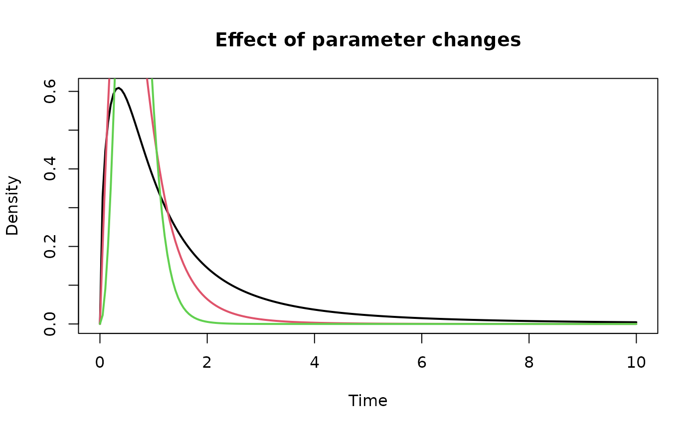

Incubation periods in infectious disease epidemiology
The incubation period is the time between infection and the onset of symptoms. Understanding this delay is important for many epidemiological applications including outbreak investigation, transmission modelling, and estimation of key disease parameters.
Incubation periods are typically positive-valued and right-skewed. Empirical estimates from outbreak data often show substantial variability and sometimes heavy tails. As a result, flexible parametric models are often needed to accurately represent their distribution.
Commonly used models include the log-normal, gamma, and Weibull distributions. However, these models may not always capture the full range of shapes observed in incubation period data.
The Burr family of distributions provides a flexible alternative that can represent a wide range of distributional shapes.
Burr-family models for incubation periods
The IncubationPeriodModels package implements several
Burr-family distributions that can be used to represent incubation
period distributions.
The package currently provides implementations of:
- Burr Type III
- Burr Type X
- Burr Type XII
- A derived Burr-like distribution
These distributions allow flexible modelling of right-skewed delay distributions and can accommodate varying levels of tail behaviour.
Simulating incubation period data
To illustrate how these distributions can be used, we simulate incubation periods from a Burr Type XII distribution.
Visualising simulated incubation periods
We can visualise the simulated data and compare it with the theoretical density.
hist(
incubation,
probability = TRUE,
breaks = 40,
main = "Simulated incubation periods",
xlab = "Time"
)
curve(
dburr12(x, c = 2, k = 3, s = 1),
add = TRUE,
col = "red",
lwd = 2
)
This example illustrates the right-skewed distribution typically observed for incubation periods.
Exploring parameter effects
One advantage of Burr-family distributions is that they allow a wide range of shapes depending on the parameter values.
x <- seq(0, 10, length.out = 200)
plot(
x,
dburr12(x, c = 1.5, k = 2, s = 1),
type = "l",
lwd = 2,
ylab = "Density",
xlab = "Time",
main = "Effect of parameter changes"
)
lines(x, dburr12(x, c = 2, k = 3, s = 1), col = 2, lwd = 2)
lines(x, dburr12(x, c = 3, k = 4, s = 1), col = 3, lwd = 2)
Changing the shape parameters modifies the skewness and tail behaviour of the distribution, allowing different incubation period profiles to be represented.
Using distribution functions in modelling
All distributions in the package follow the standard R interface:
| Function | Purpose |
|---|---|
d* |
density |
p* |
cumulative distribution |
q* |
quantile |
r* |
random generation |
For example:
These functions make it straightforward to incorporate Burr-family distributions into simulation studies or likelihood-based inference frameworks.
Summary
The Burr family of distributions provides flexible parametric models for right-skewed delay distributions such as incubation periods.
The IncubationPeriodModels package implements several
Burr-family distributions in R, allowing researchers to easily simulate,
visualise, and analyse incubation period data using a consistent
interface.